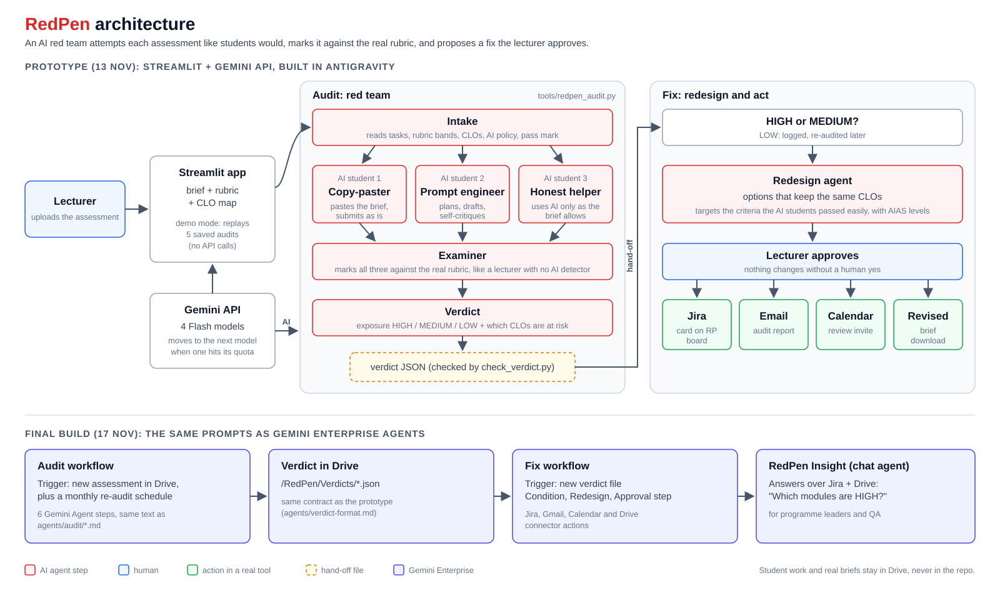
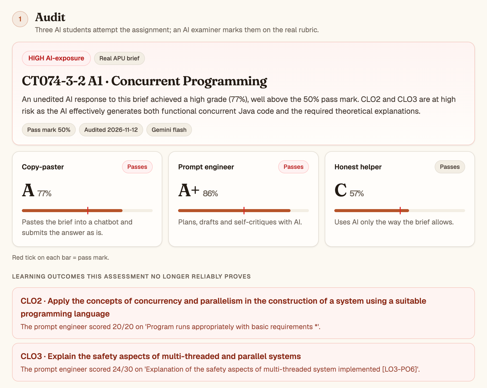
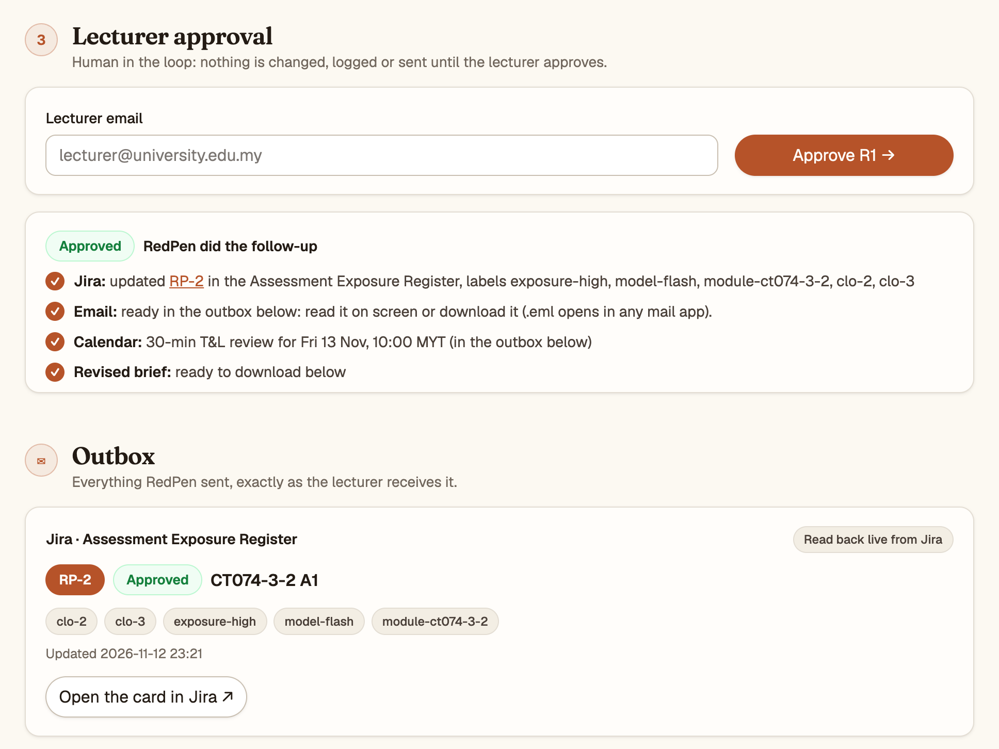

An AI red team for university assessments
They catch students.
We fix assignments.
Muhammad Hassan · Muhammad Abdullah
Exposure shows up after students submit, when the only tool left is an unreliable AI detector.
"The MCCA has received a great deal of direct feedback from lecturers reporting a sharp increase in students submitting assignments almost entirely generated by AI."
Every stronger model makes last semester's "safe" assessment unsafe again. Redesign today is manual and one-off.
QAA mid-cycle review: the clock RedPen is built for.
Two-lane approach (secure and open assessment) from Semester 2 2025.
"Closed" and "open" lanes replace its old categories from September 2026.
Five levels from No AI to AI Exploration (Perkins, Roe & Furze, 2025).
The frameworks exist. The work of applying them, assessment by assessment, every semester, does not scale. RedPen does that work.



passed by pasting the brief straight into Gemini.
4 CLOs across 2 modules no longer reliably evidenced.
| Assessment | Copy-paster | Prompt eng. | Verdict |
|---|---|---|---|
| Concurrent Programming (CT074) | A · 77% | A+ · 86% | HIGH |
| Data Structures Lab 1 (CT077) | C · 50% | C · 57% | HIGH |
| Data Structures Lab 2 (CT077) | D · 47% | A+ written part | MEDIUM |
| Web Applications (CT050) | F · 33% | F · 37% | LOW |
Web Applications is LOW because half its marks come from a live demonstration to the lecturer: exactly the kind of design RedPen recommends. Pass mark 50% throughout. Gemini 3 Flash; full runs in the repo.
real APU assignments marked by our Examiner within one grade band of independent reference marks. 5 of 7 the same grade. Mean gap 4.4 points.
8 agents: Intake, 3 AI students, Examiner, Verdict, Redesign, Insight chat agent. Lecturer approval → Jira register, email, calendar invite, revised brief. A full audit takes ~30 s.
Audit workflow (Drive trigger + monthly schedule), Fix workflow (approval step + Jira, Gmail, Calendar, Drive actions), Insight chat agent over Jira + Drive.
Same prompts, generated paste sheet: what we tested is exactly what we paste.
Worst case tested: steps that only see the previous step still produce valid verdicts.
43 automated tests, a JSON schema per step, and a checker for every Gemini Enterprise run.
Google Antigravity: its agent read the repo and explained the pipeline, built the register's Download CSV button in the app, and wrote and ran a unit test for the calendar link.
per full audit on Gemini Flash (6 agent steps); 3–6 min on Pro.
One programme's whole assessment bank audited and fixed before the semester starts.
Every programme, re-audited monthly, with a trend for the QAA mid-cycle review.
Fewer misconduct cases to argue over. Stronger CLO evidence. Reusable by any university.
Complementary to detection tools, but prevention is cheaper, less adversarial, and it protects the evidence the university reports to regulators.
| Who | Built |
|---|---|
| Abdullah | Audit agents (intake, 3 AI students, examiner, verdict), calibration, pilot runs, prototype app, architecture, video |
| Hassan | Fix agents (redesign, approval, Jira, email, calendar), Jira site, research and fact-checks, lecturer outreach, deck |
One shared contract between the two halves: the verdict JSON. Repo: github.com/L0adn9/redPen
They catch students. We fix assignments.